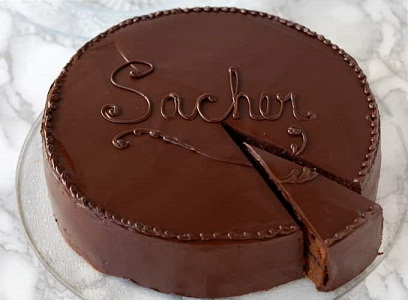

Si aún te que has quedado con dudas del paso a paso, no dejes de mirar el siguiente video en donde sale más detallado el paso a paso de esta gran preparación:

Formulario de contacto
Si aún te que has quedado con dudas del paso a paso, no dejes de mirar el siguiente video en donde sale más detallado el paso a paso de esta gran preparación: